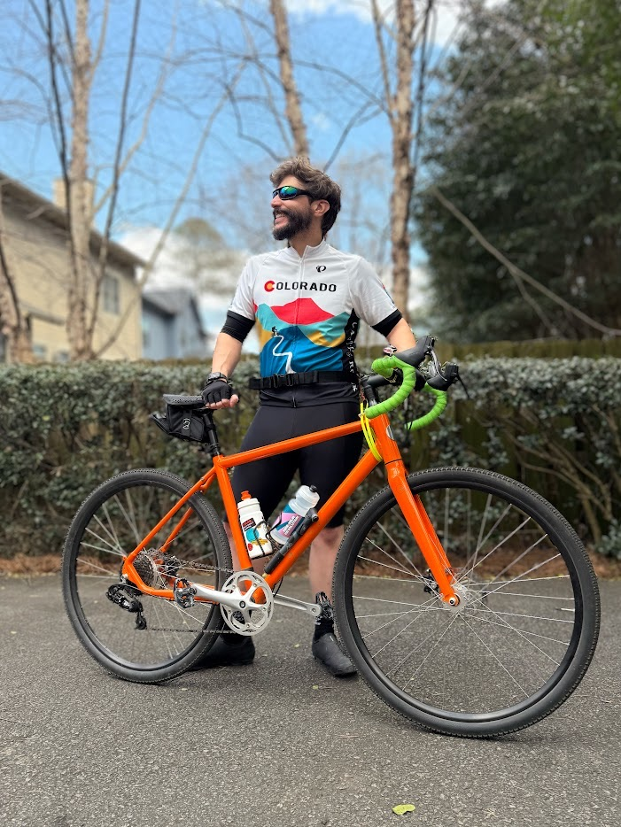

About Me
I live in Charlotte, NC with my wife and cat. In my free time, I can often be found
riding my bike
around
town, 3D scanning sculptures, or recording videos for my YouTube channel.
I'm currently working as an Applications Engineer at Carbon,
where I focus on bringing
consumer products to market using additive manufacturing.
